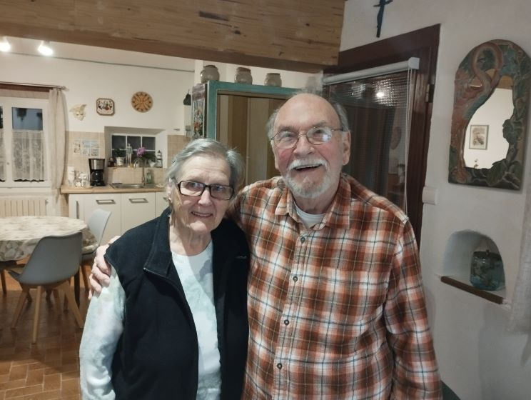

Saint Martin Lys - Personnalité -
Noël Rios
Emile Noël RIOS maire de Saint-Martin-Lys de juin 1995 à mars 2008
(prénom d’usage : Noël)

Noël, né à Saint Martin, a migré avec ses parents en Belgique pour cause économique à l’age de 5 ans. La vie à Saint Martin était devenu trop difficile pour nourrir cette grande famille.
Noël pensait consacrer sa vie à la prêtrise jusqu’au jour, où au cinéma, il a été invité à venir s’asseoir à coté d’un jeune et trop belle fille. Un baisé d’Annette a déclenché un trouble tel, que Noël a demandé à son père de déménager par peur de la rerencontrer. Le temps a arrangé bien des choses.
Bien que résident en Belgique, Noël a gardé la nationalité française ce qui l’a obligé à faire son service militaire en France. Et par conséquence de participer à la guerre d’Algérie.
Le service postal entre la Belgique et l’Algérie n’était pas des plus efficaces à cette époque. Il a failli être la cause de la séparation prématuré des deux tourtereaux. L’attente de courriers qui n’arrivent pas, réaction négative à cette absence aurait pu être la cause d’une rupture. Heureusement les excuses ont suffit à les rabibocher.
Grace à la moto, moyen de communication bien pratique, Noël a gardé le contact avec son village d’origine, rendant souvent visite à sa grand-mère. Est ce que, plus jeunes, ce sont les glissades dans les rues pentues de Saint-Martin sur des karts improvisés qui lui ont donné la passion de la moto ? En tout cas ces voyages lui ont permis de faire un trafic de saucissons entre Couiza et la Belgique où ces charcuteries d’ici étaient bien appréciées.
Aussi, dès arrivé à la retraite Noël a décidé de venir s’installer à Saint Martin (dans l’ancienne maison des Venture d’abord).
Quand Georges Marcerou a décidé de céder sa place de Maire, il a naturellement pensé à son neveu Noël pour prendre son relais. Mais apparemment Albert Lefrançois revenu habiter le village après sa détention n’était pas de cet avis. Il a fallu bien du courage à Noël pour résister à la pression de l’ancien boxeur qui a pu avoir à cette occasion des attitudes bien menaçantes.
Aussi en 1995 Noël fut le seul candidat au poste.
Les événements qui ont marqué particulièrement Noël pendant cette période :
- Le crash aérien au pont du Bourrec de la jeune élève pilote Céline Signoret et de son instructeur en 2004, quand les secouristes ont demandé à Noël de venir identifier les corps. Des habitants du village avaient bien repéré cet avion qui volait bien trop bas. Et là, il fallait pouvoir dire s’il y avait bien le corps d’un homme et d’une femme à différentier malgré l’incendie qui avait gommé les trait de chacun.
- Les discussions avec les entreprises proposant les activités d’eaux vives (rafting, canoë…). Passer par Saint Martin : Ok, mais squater toute la place en faisant embarquer au village : Non. Le non respect des accords a amené Noël à compter le nombre de passages depuis le pont de Saint Martin, durant une période où ces entreprises demandaient à être indemnisé pour le manque d’eau dans la rivière. Ce pointage, rapporté au sous préfet, a fait douter celui-ci de la pertinence de cette indemnisation...
- Les réunions préparatoires au passage du Tour de France par les Gorges de la Pierre-Lys. L’ensemble des maires des communes concernés par l’étape avaient été réunis. La question de l’assurance en cas de chute de pierres dans les gorges a été posée. Des informations contradictoires, les organisateurs assurant être assuré, mais le préfet n’était pas convaincu que ce soit le cas, avec la possibilité même que le maire d’une commune dans laquelle un incident pourrait intervenir pourrait même faire de la prison de par sa responsabilité sur les événements sur son territoire. Bref les coureurs sont passés par les gorges, mais la caravane, elle a pris un autre chemin. Et depuis le tour a choisi d’autres itinéraires.
- Une fillette de 13 ans tombée lors d’une ascension de nuit de la via ferrata. Un arrêté municipal interdisant l’escalade sur la commune existe, couvrant le maire (réveillé au matin par le brigadier de gendarmerie, venu lui signaler l’accident).
- Un sanglier renversé par une voiture. Le gendarme témoin qui vient réveiller Noël à minuit pour s’occuper de la carcasse. Sur les lieux plus de sanglier. En fait il avait fait une cinquantaine de mètres depuis le choc. Et donc en pleine nuit, convocation des chasseurs du village pour dépecer l’animal.
- Des restes humains trouvés par un excursionniste dans les hauteurs de Saint Martin, Seuls subsistaient quelques os, un morceau de tissu et surtout un collier qui a permis l’identification de la dame disparue depuis près de 10 ans, par son fils.
- Les travaux à l’église, où Noël est lui même monté sur le toit pour changer quelques tuiles et fait quelques opérations de replâtrage quand l’humidité avait entraîné des dégradations importantes.
Quelques réalisation de Noël :
Terrain de boules, réaménagement de la salle des fêtes, déplacement de la mairie dans l’ancienne salle de classe et location du logement de l’instituteur. Travaux à l’église.
En 2008, après avoir remis en main propre sa démission au sous-préfet, Noël est retourné en Belgique pour se rapprocher de ses enfants.
Et en 2024 Noël et Annette sont de retour à Saint Martin où est venu habité leur petit fils au préalable. Mais que de soucis pour ce retour, en particulier pour assurer son véhicule et avoir le quitus qui va bien, pour pouvoir voter, et autre tracas comme pour faire poser une cuisine…
Commentaires
Cliquer ici pour faire un Commentaire
Retour à l'accueil Précédent Suivant